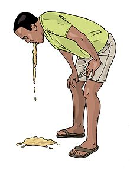
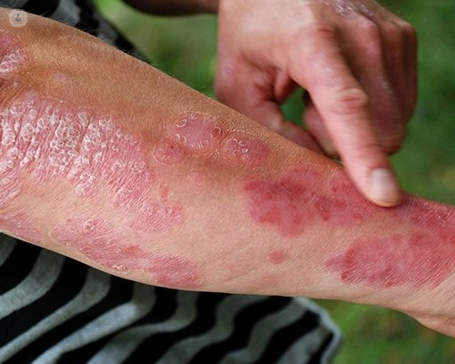

Poisonous flowers are plants with toxic compounds that can harm humans and animals if ingested, touched, or inhaled. Often, these toxins serve as a defense mechanism to deter herbivores and pests from feeding on them. While many of these flowers have captivating colors and alluring fragrances, they contain chemicals that can be dangerous or even deadly. Poisonous flowers are found worldwide, in both wild and cultivated settings, and vary greatly in toxicity. Some can cause mild skin irritation, while others can lead to severe symptoms, such as nausea, paralysis, or heart failure.
For instance, the Oleander is a common landscaping plant that produces beautiful clusters of flowers, yet all parts of the plant are highly toxic, potentially fatal if ingested. The Lily of the Valley, a delicate and fragrant flower, contains cardiac glycosides, which can lead to irregular heart rhythms. Even familiar garden plants like Daffodils have toxic bulbs that can cause serious digestive issues if mistakenly consumed.
While poisonous flowers pose risks, they can still be enjoyed safely by observing caution, especially around children and pets. Gardeners should use gloves when handling certain plants and be mindful of the placement of toxic varieties. Poisonous flowers add natural beauty to landscapes, and with proper knowledge, their dangers can be managed effectively. When incorporated safely, these flowers remind us of the fascinating power and complexity of nature.
EFFECT OF POSIONOUS PLANT
Nausea
Vomiting
Diarrhea
Abdominal Pain
Headache
Dizziness
Confusion
Seizures
Coma
Respiratory Failure
Cardiac Arrest
Skin Irritation
Burns
Blisters
Rashes
Anaphylaxis
Paralysis
Fever
Fatigue


ADVANTAGE OF POISONOUS PLANT
Poisonous plants, despite their dangerous reputation, offer several significant advantages. Many of these plants have been harnessed for their medicinal properties. For instance, the foxglove plant contains digitalis, a compound used to treat heart conditions. Similarly, the yew tree produces taxol, a crucial drug in cancer treatment.
In agriculture, certain poisonous plants act as natural pesticides, reducing the need for chemical alternatives. For example, neem trees produce compounds that deter pests, promoting organic farming practices.
Ecologically, poisonous plants play a vital role in maintaining biodiversity. They can control herbivore populations, ensuring that no single species dominates an ecosystem. This balance supports a variety of plant and animal life, contributing to a healthy environment.
Additionally, these plants have cultural and historical significance. Many have been used in traditional rituals and as symbols in folklore, enriching human heritage.
In summary, while poisonous plants must be handled with care, their contributions to medicine, agriculture, ecology, and culture highlight their indispensable role in our world.